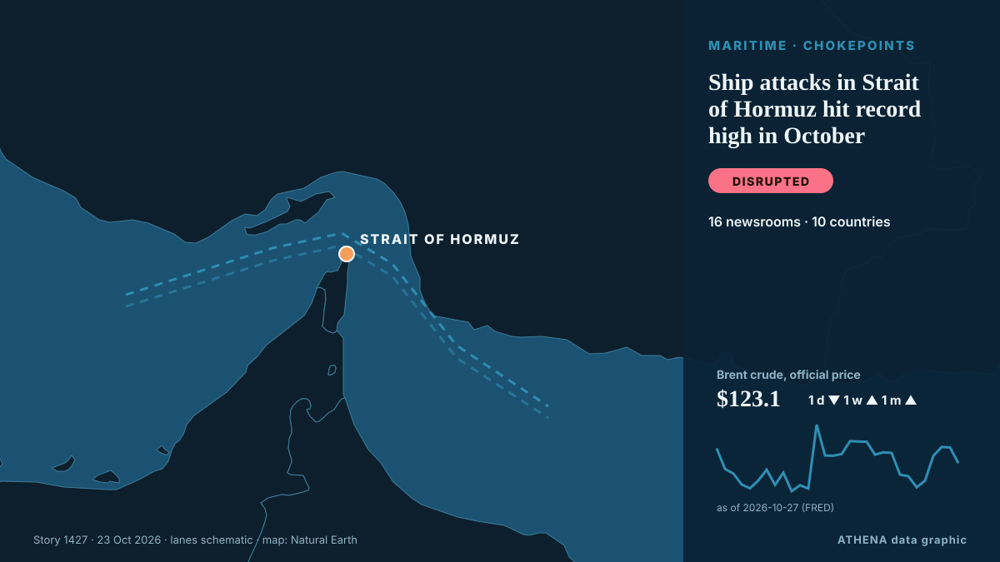

Ship attacks in Strait of Hormuz hit record high in October

A Washington-based think-tank recorded 28 confirmed and reported attacks. من The Straits Times
نشرته بشكل مستقل 16 مصدرًا في 10 دول منذ 10 أكتوبر، وأول من نشره Asharq Al-Awsat (English)؛ والتغطية في ذروتها. يقدّر ATHENA الخطر بأنه معتدل (3.2/10)، ويعود ذلك أساسًا إلى خطورة الضرر الموصوف ونطاقه الجغرافي والقطاعي. الثقة 92٪ (مرتفعة)، وعدد المصادر المستقلة المؤكِّدة: 16، بمتوسط موثوقية للمصادر يبلغ 77٪. من نقل الخبر: 4 وسائل إعلام في الولايات المتحدة · United States, 3 وسائل إعلام في المملكة العربية السعودية · Saudi Arabia, 3 وسائل إعلام في الكويت · Kuwait. امتدت التغطية من 10 أكتوبر إلى 23 أكتوبر، على مدى 322 ساعة.
لماذا يهم: يربط مضيق هرمز الخليج العربي بالمحيط المفتوح، ويمر عبره نحو خُمس النفط المستهلك في العالم؛ لذا تحرّك الهجمات على السفن أو التهديدات بإغلاقه أسعار الطاقة وأقساط التأمين خلال ساعات.
ما الذي تغيّر: 3 تقارير جديدة من 3 غرف أخبار خلال 24 ساعة حتى 23 أكتوبر.
تُعرض العناوين بالإنجليزية كما نُشرت.
نظرة سريعة
اختير وقُيِّم وكُتب وفق منهجية ATHENA المنشورة. لا يتدخل أي محرر في الأحداث بعينها. كيف يُنتَج ›
| 10 Oct 05:18 UTC | 1 |
|---|---|
| 10 Oct 17:18 UTC | 0 |
| 11 Oct 05:18 UTC | 0 |
| 11 Oct 17:18 UTC | 0 |
| 12 Oct 05:18 UTC | 0 |
| 12 Oct 17:18 UTC | 0 |
| 13 Oct 05:18 UTC | 1 |
| 13 Oct 17:18 UTC | 0 |
| 14 Oct 05:18 UTC | 7 |
| 14 Oct 17:18 UTC | 1 |
| 15 Oct 05:18 UTC | 4 |
| 15 Oct 17:18 UTC | 1 |
| 16 Oct 05:18 UTC | 2 |
| 16 Oct 17:18 UTC | 0 |
| 17 Oct 05:18 UTC | 1 |
| 17 Oct 17:18 UTC | 0 |
| 18 Oct 05:18 UTC | 0 |
| 18 Oct 17:18 UTC | 0 |
| 19 Oct 05:18 UTC | 1 |
| 19 Oct 17:18 UTC | 0 |
| 20 Oct 05:18 UTC | 0 |
| 20 Oct 17:18 UTC | 0 |
| 21 Oct 05:18 UTC | 1 |
| 21 Oct 17:18 UTC | 0 |
| 22 Oct 05:18 UTC | 0 |
| 22 Oct 17:18 UTC | 0 |
| 23 Oct 05:18 UTC | 3 |
| 17 Oct 11:46 UTC | 5.8 |
|---|---|
| 17 Oct 13:57 UTC | 2.3 |
| 23 Oct 15:46 UTC | 3.2 |
لماذا هذه الأرقام
الأهمية
الخطر
الثقة
التغطية — من نشر الخبر ومتى
العنوان كما نُشر · يفتح الأصل- Asharq Al-Awsat (English) · المملكة العربية السعودية · Saudi ArabiaIran Guards Say Struck Tanker Transiting Strait of Hormuz
- Arab Times · الكويت · KuwaitIran Intensifies Attacks on Ships in Hormuz; 4 Tankers Hit
- Oman Observer · عُمان · OmanShip with 2,500 containers sinks in Hormuz: Report
- Arab Times · الكويت · KuwaitContainer Ship Carrying 2,500 Containers Sinks Near Strait of Hormuz
- Mehr News (English) · إيران · IranContainer carrier sinks in Strait of Hormuz after explosion
- Arab Times · الكويت · KuwaitOne More Container Ship Struck by Unknown Projectile in Strait of Hormuz, UKMTO Reports
- Asharq Al-Awsat (English) · المملكة العربية السعودية · Saudi ArabiaContainer Ship Sinks Near Hormuz after Being Hit by Projectile
- Tehran Times · إيران · IranUS carriers dare not approach Hormuz, we are waiting to sink them
- The Guardian · المملكة المتحدة · United KingdomTwo container ships sink near strait of Hormuz amid surge in Iranian attacks
- The Independent · المملكة المتحدة · United KingdomShip carrying 2,500 containers sinks after hitting mine in Strait of Hormuz, claim Iran’s Guards
- The National · الإمارات العربية المتحدة · United Arab EmiratesFire, sinking and reported scramble for cargo: what we know about ship lost in Strait of Hormuz
- The New Arab · INTIran-US tensions soar as ships sink in Hormuz, fighting in Taiz
- Rigzone · الولايات المتحدة · United StatesContainer Ship Sinks in Strait of Hormuz
- Egypt Independent · مصر · EgyptTwo cargo ships sunk in Strait of Hormuz as Iran ramps up attacks in run-up to midterms
- The New Arab · INTTwo ships sink near Hormuz after being hit by projectiles
- CNBC World · الولايات المتحدة · United StatesOne Singapore ship was sunk, but here's why others are still transiting the Strait of Hormuz
- FreightWaves · الولايات المتحدة · United StatesContainer ship attacks escalate in Strait of Hormuz
- Mehr News (English) · إيران · IranIran Navy says no. of ships hit in east of Hormuz rising
- Guardian Business · المملكة المتحدة · United KingdomPeople scour strait of Hormuz for spilt cargo after Iran attacks container ships
- Asharq Al-Awsat (English) · المملكة العربية السعودية · Saudi ArabiaUKMTO: Ship Attacked Near Strait of Hormuz
- NEWS.am (English) · أرمينيا · ArmeniaIran state television, radio reports stopping of law-breaking ships in Hormuz strait
- The Straits Times · سنغافورة · SingaporeShip attacks in Strait of Hormuz hit record high in October
- Al-Monitor · الولايات المتحدة · United StatesShip attacks in Strait of Hormuz hit record high in October